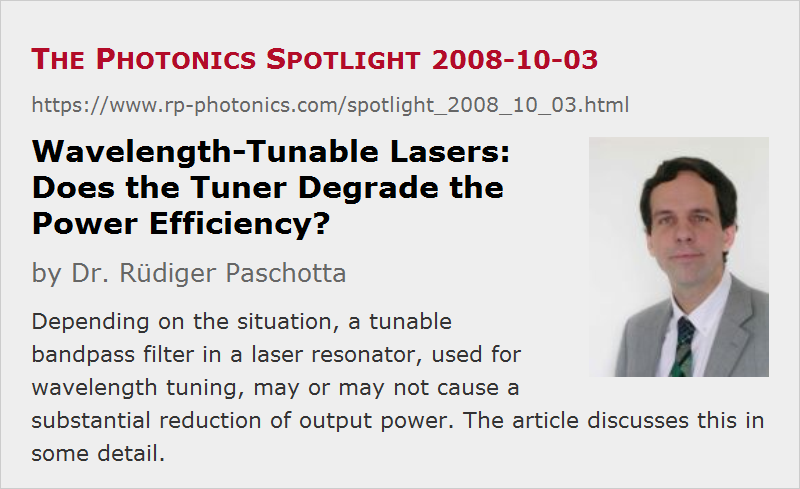

Wavelength-Tunable Lasers: Does the Tuner Degrade the Power Efficiency?
Posted on 2008-10-03 as a part of the Photonics Spotlight (available as e-mail newsletter!)
Permanent link: https://www.rp-photonics.com/spotlight_2008_10_03.html
Author: Dr. Rüdiger Paschotta, RP Photonics Consulting GmbH
Abstract: Depending on the situation, a tunable bandpass filter in a laser resonator, used for wavelength tuning, may or may not cause a substantial reduction of output power. The article discusses this in some detail.

Ref.: encyclopedia articles on tunable lasers, wavelength tuning, optical filters
In a wavelength-tunable laser, some kind of adjustable optical bandpass filter such as a birefringent tuner is often used for adjusting the emission wavelength. As such a tuner introduces wavelength-dependent power losses, one may wonder to what extent it reduces the power efficiency of the laser, and on which factors this power reduction depends.
A tunable continuous-wave laser usually operates with a relatively narrow emission bandwidth. The question is then to what extent the filter introduces losses in that narrow wavelength region. In principle, it could have virtually zero losses in some wavelength interval and strong losses outside that interval. One might then expect that the power efficiency of the laser is not affected at all, simply because there is no loss for the circulating light, having the right wavelength to be well transmitted.
Of course, the power may be reduced when forcing the laser to operate at some wavelength with low gain. Even when not enforcing oscillation at an “inconvenient” wavelength, the power efficiency may be reduced if the laser doesn't “like” to emit with a narrow bandwidth. For example, spatial hole burning in the laser crystal may reduce the power efficiency when single-frequency operation is enforced. Other kinds of inhomogeneous saturation may also play a role, even without single-frequency operation.
Another problem arises when the filter has no steep edge in its transmission spectrum. For example, consider the use of an etalon as a tuner. The etalon shouldn't be too thick in order to select one particular transmission window, but that window is then relatively broad. A similar situation occurs when a prism pair is used to spatially disperse different wavelengths in some region of the laser resonator, and a knife edge is inserted in that region. The oscillation wavelength of the laser will then be a kind of compromise between minimum filter loss and maximum gain. Therefore, it does introduce significant loss for the oscillating wavelength, even though there would be some other wavelength nearby with even smaller losses. It can then be helpful to use a filter with a steeper spectral transmission function. It is even possible that the insertion of such a narrowband filter in addition to the original tuner increases the output power by forcing the laser to operate where the loss is lower. Of course, one would then remove the first tuner, as it is not more required – except if the steeper filter is a thicker etalon, and the thinner one is required to select the right transmission window.
This article is a posting of the Photonics Spotlight, authored by Dr. Rüdiger Paschotta. You may link to this page and cite it, because its location is permanent. See also the RP Photonics Encyclopedia.
Note that you can also receive the articles in the form of a newsletter or with an RSS feed.
Questions and Comments from Users
Here you can submit questions and comments. As far as they get accepted by the author, they will appear above this paragraph together with the author’s answer. The author will decide on acceptance based on certain criteria. Essentially, the issue must be of sufficiently broad interest.
Please do not enter personal data here; we would otherwise delete it soon. (See also our privacy declaration.) If you wish to receive personal feedback or consultancy from the author, please contact him e.g. via e-mail.
By submitting the information, you give your consent to the potential publication of your inputs on our website according to our rules. (If you later retract your consent, we will delete those inputs.) As your inputs are first reviewed by the author, they may be published with some delay.
|  |
If you like this page, please share the link with your friends and colleagues, e.g. via social media:
These sharing buttons are implemented in a privacy-friendly way!